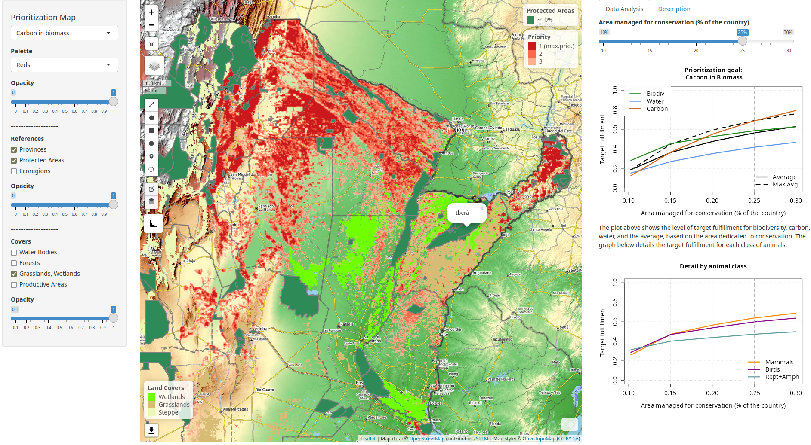

Inicio
In this manual, you will find the description of the usage and operation of the main tools of the map viewer, as well as the technical information of the base layers, the methodology of the prioritization analysis, and the resulting products.
